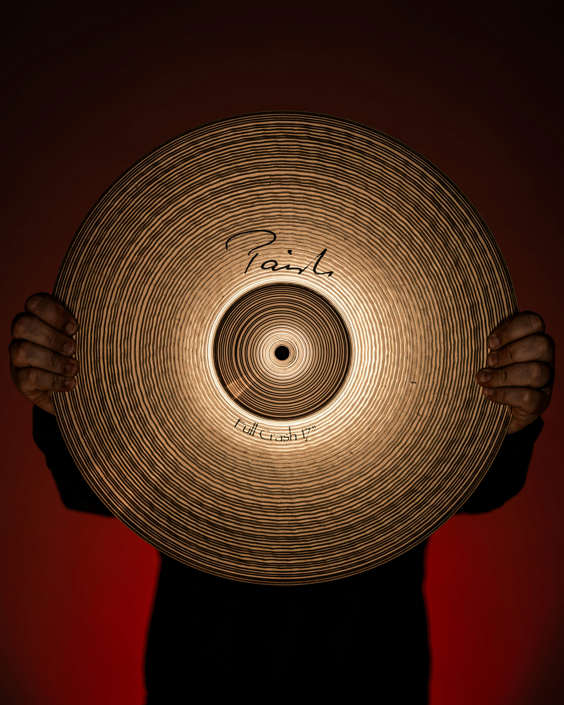

Description:
Cymbals are percussion instruments made from thin, round metal plates that produce a bright, crashing, or shimmering sound. They are commonly used in concert bands, orchestras, marching bands, drum sets, and many styles of popular music. Common types include crash cymbals, suspended cymbals, ride cymbals, and hi-hats. Their sound can range from short and powerful to soft and sustained.

How to Play the Cymbals:
Cymbals can be played in several different ways depending on the type. Crash cymbals are usually struck together, while suspended cymbals are struck with sticks or mallets. On a drum set, cymbals are struck with drumsticks, and hi-hats can also be opened and closed using a foot pedal.